Coimbatore's leading CBSE school, nurturing leaders, critical thinkers, and champions since 2010.
Student Achievements
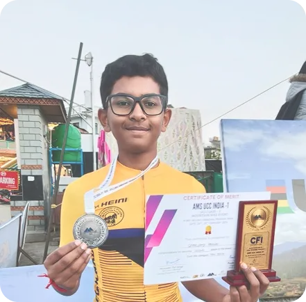
National Asian Cycling Champion, Record Holder
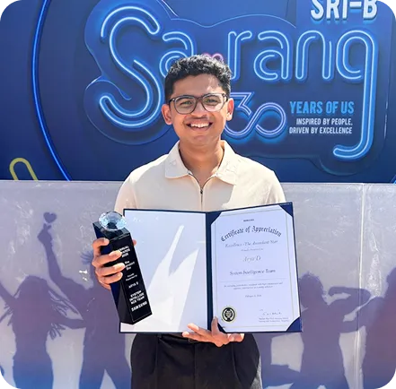
Senior Software Engineer, Samsung Research India
Aspiring Commercial Pilot, HAPS Pilipinas Aviation Academies
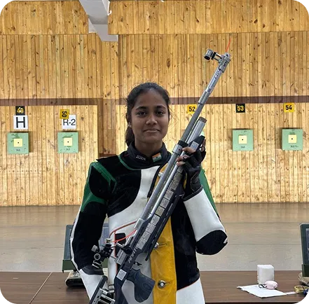
State Record Holder & National Medalist in Rifle Shooting
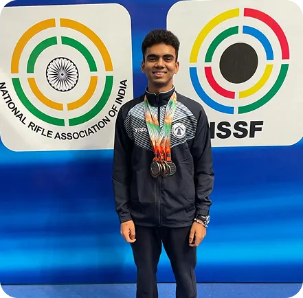
ISSF Junior World Cup Medalist & Double Silver at National Shooting Championship
Collaborating with IPL, ISL & Khelo India, Driving Excellence in Sports Science & Management
Academic Programs
Our CBSE curriculum is designed to meet the unique developmental needs of each learner, providing a seamless and challenging educational journey from early years to high school.
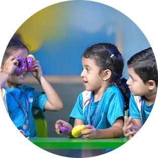
Early Learners
Mont I to Mont III
We blend Montessori, Waldorf, and Kindergarten methods to teach core subjects through hands-on activities, fostering a love for learning in a nurturing environment.
Primary
Grade 1 to Grade 5
This stage focuses on holistic development, blending academics with arts and sports. A unique 'Thursday Treats' program encourages self-directed learning based on individual aptitudes.
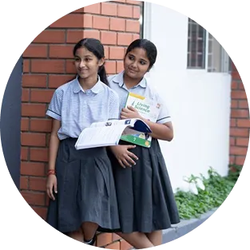
Middle School
Grade 6 to Grade 10
We offer a dynamic, activity-oriented environment that caters to eight different learning styles. The curriculum includes diverse hobbies and sports clubs to keep students engaged.
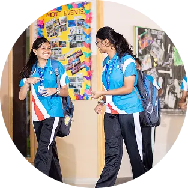
Senior School
Grade 11 Grade 12
Our students excel in board exams and receive supplementary training for NEET, JEE, and SAT. They actively organize major interschool events and competitions.
Beyond the Classroom
An education that nurtures confident, balanced individuals ready for the world.
Students actively lead the school by hosting major events like the 'SYMBIOSIS' commerce meet and the 'Golden Boot' football tournament.
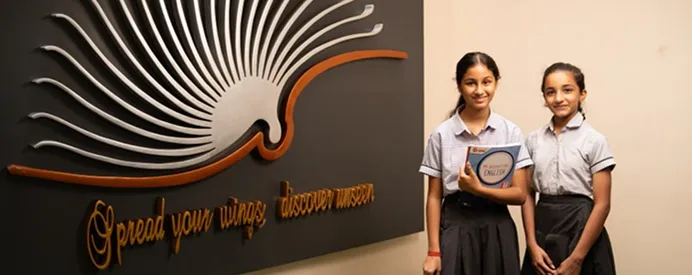
We move beyond textbooks. Learning is reinforced through experiments, educational music videos, field trips, and Learning Expos where students showcase their work.
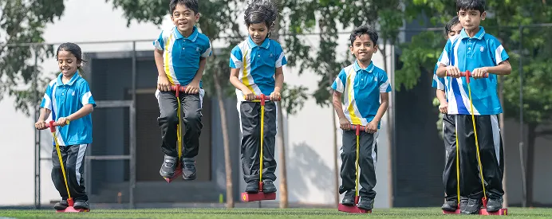
Our campus features an Olympic-size swimming pool and coaching for diverse sports such as rifle shooting, throwball, skating, and taekwondo, producing state-level champions.
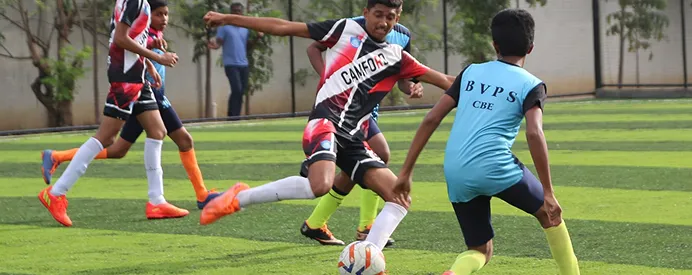
Our excellence is recognized by the British Council's 'International School Award' and the 'Global Excellence Award for Best School in India' presented in London.
World-Class Infrastructure
Every facility at Camford is designed to support learning, health, sport, and student well-being.
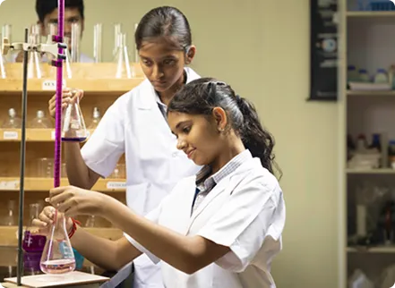
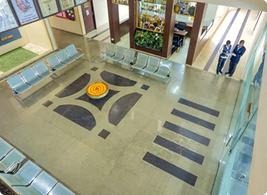
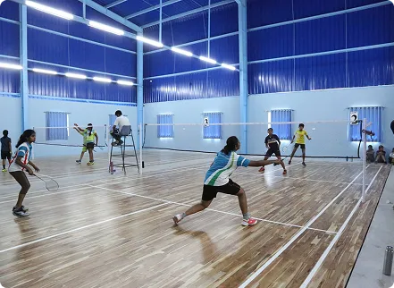
HOW TO APPLY
Connect
Fill out our online enquiry form to receive detailed information about the curriculum, fee structure, and upcoming open house events.
Visit
Schedule a campus tour to experience our facilities firsthand and meet our academic coordinators for a personalized discussion.
Apply
Submit the online application along with the required documents to formally register for the admission process.
Assess
Attend a school-level interaction or assessment to help us understand your child's unique strengths and learning needs.
Enroll
Upon selection, complete the enrollment by paying the admission fee to secure your child's place for the academic year.
Yes, Camford is fully affiliated with the Central Board of Secondary Education (CBSE). This affiliation ensures a nationally recognised curriculum that is structured, comprehensive, and prepares students for competitive entrance exams like JEE and NEET, as well as higher education opportunities across India and abroad.
Camford welcomes children as young as 3 years old into the Montessori I (Mont I) programme. Our Early Learners programme spans Mont I to Mont III, making it the ideal starting point for young minds. Admission is subject to a readiness assessment and seat availability.
Beyond academics, Camford offers a rich ecosystem of sports clubs, creative arts, hobby groups, and leadership programmes. Our Middle School curriculum caters to eight different learning styles, while the Thursday Treats initiative in Primary encourages self-directed exploration and passion-based learning.
Senior School offers Science (with Physics, Chemistry, Biology/Mathematics), Commerce, and Humanities streams. Students also receive supplementary coaching for NEET, JEE, and SAT, enabling them to pursue a wide range of career pathways after Grade 12.
Camford operates a fleet of GPS-tracked school buses with trained attendants and fixed pickup/drop routes across the city. Safety protocols are strictly followed, and parents receive real-time notifications for pickups and drop-offs through the school's communication app.
Camford maintains a low teacher-to-student ratio of 1:20 across all classes, ensuring each child receives personalised attention. In Early Learners classrooms, the ratio is even lower at 1:12 to support the developmental needs of young children.